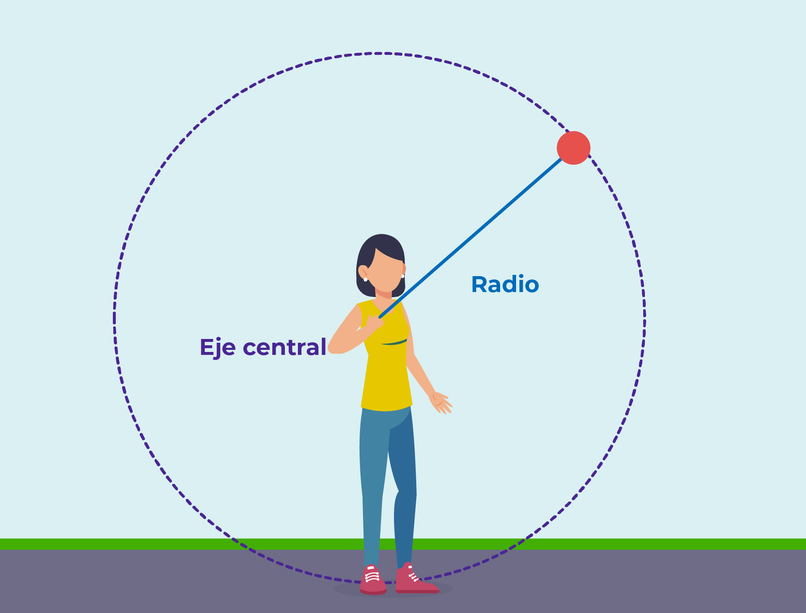

Conceptos

Un movimiento se llama circular uniforme cuando la órbita del móvil es circular y el módulo de su velocidad permanece constante.el MCU es un fenómeno periódico.
Los objetos o cuerpos no se mueven solamente en su trayectoria rectilinea, aveces encontramos objetos que no siguen una trayectoria rectilinea si no curvas por ejemplo; las manesillas del reloj.
El movimiento circular uniforme es aquel movimiento en el cual la trayectoria descrita por el movil es una circunferencia
Periodo de Rotacion.
El período de rotación (T) es el tiempo que tarda un objeto en dar una vuelta completa en su trayectoria circular. Se relaciona con la frecuencia y la velocidad angular del objeto.
Fórmulas importantes:
Período (T):
T=2π r / v
Donde:
T es el período (tiempo que tarda en completar una vuelta).
r es el radio de la trayectoria circular.
v es la velocidad tangencial del objeto.
Frecuencia (f):
f=1/ T
La frecuencia es el número de vueltas que el objeto da en un segundo y está relacionada inversamente con el período.
Si un objeto se mueve en una circunferencia con un radio r y mantiene una velocidad constante v, el tiempo que tarda en completar una vuelta completa (esto es, el período T) depende del radio de la circunferencia y de la velocidad tangencial del objeto.
El período y la frecuencia están inversamente relacionados: un período largo significa una frecuencia baja (pocas vueltas por segundo), mientras que un período corto implica una frecuencia alta (muchas vueltas por segundo).
El período de movimiento circular es el tiempo que tarda el cuerpo en recorrer una circunferencia completa.
periodo y Frecuencia
Periodo es el tiempo que tarda un cuerpo en MCU para dar vuelta completa o una revolucion completa.
por otro lado si dividieremos el n numero de vueltas (n) en el tiempo(t) obtrendremos el n numero de vueltas que da la piedra en cada unidad de tiempo , esto constituye la frecuencia.
frecuencia Periodo
F= n/t T=t/n